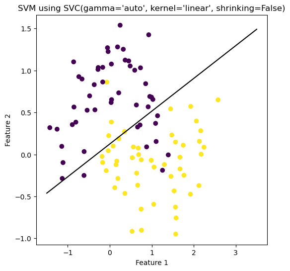
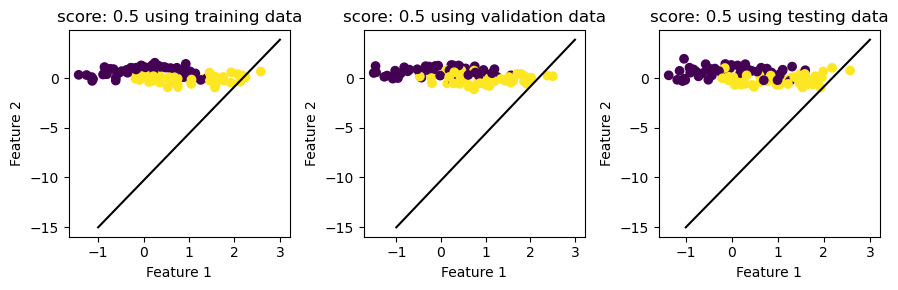

from matplotlib import pyplot as plt
import numpy as np
from sklearn.linear_model import LogisticRegression
from sklearn.svm import SVC
# from final_project_code import FinalProject
# from newton_raphson import Newton_Raphson
# from final_plot import plot_stuff
from sklearn.datasets import make_moons
from main import supp_vec_machineMy SVM implementation
The source code of this implementation could be found in this directory on github along with this blog post.
%load_ext autoreload
%autoreload 2The autoreload extension is already loaded. To reload it, use:
%reload_ext autoreloadfrom sklearn.preprocessing import LabelEncoder
from itertools import combinations
from matplotlib.patches import Patch
# import seaborn as sns
# from mlxtend.plotting import plot_decision_regions# mySVC = SVC(kernel="linear", gamma="auto", shrinking=False)
# mySVC.fit(X_test, y_test)# mysvm = supp_vec_machine(row_length=row_length)
# mysvm.fit(X_test,y_test, max_iter=1e3, alpha=1, tol=1e-5, lamb=0.5)# print(mysvm.weights)
# print(mysvm.beta)# mysvm.big_plot(X_train, y_train, X_validate, y_validate, X_test, y_test, 9,3)X,y= make_moons(100, shuffle=True, noise = 0.2)
X_train, y_train = make_moons(100, shuffle=True, noise = 0.28)
X_validate, y_validate= make_moons(100, shuffle=True, noise = 0.30)
X_test, y_test= make_moons(100, shuffle=True, noise = 0.32)
plt.rcParams["figure.figsize"] = (4,4)
plt.scatter(X[:,0], X[:,1], c=y)
labels=plt.gca().set(xlabel="Feature 1", ylabel="Feature 2")
soln = SVC(kernel="linear", gamma="auto", shrinking=False)
soln.fit(X_train, y_train)SVC(gamma='auto', kernel='linear', shrinking=False)In a Jupyter environment, please rerun this cell to show the HTML representation or trust the notebook.
On GitHub, the HTML representation is unable to render, please try loading this page with nbviewer.org.
SVC(gamma='auto', kernel='linear', shrinking=False)
print(soln.coef_)
print(soln.intercept_)[[ 0.69190546 -1.63813064]]
[-0.03091258]print(soln.coef_)
a_0 = soln.coef_[0][0]
a_1 = soln.coef_[0][1]
print(soln.intercept_[0])
plt.rcParams["figure.figsize"] = (6,6)
fig = plt.scatter(X_train[:,0], X_train[:,1], c = y_train)
xlab = plt.xlabel("Feature 1")
ylab = plt.ylabel("Feature 2")
f1 = np.linspace(-1.5,3.5, 501)
p = plt.plot(f1, - (soln.intercept_/a_1) - (a_0/a_1)*f1, color = "black")
title = plt.gca().set_title(f"SVM using {soln}")[[ 0.69190546 -1.63813064]]
-0.030912584333047263
mysvm = supp_vec_machine()
mysvm.fit(X_train, y_train, max_iter=1e5, alpha=1, tol=1e-6, lamb=0.5)iter_count: 10
iter_count: 20
iter_count: 30
iter_count: 40
iter_count: 50
iter_count: 60
iter_count: 70
iter_count: 80
iter_count: 90
iter_count: 100
iter_count: 110
iter_count: 120
iter_count: 130
iter_count: 140
iter_count: 150
iter_count: 160
iter_count: 170
iter_count: 180
iter_count: 190
iter_count: 200
iter_count: 210
iter_count: 220
iter_count: 230
iter_count: 240
iter_count: 250
iter_count: 260
iter_count: 270
iter_count: 280
iter_count: 290
iter_count: 300
iter_count: 310
iter_count: 320
iter_count: 330
iter_count: 340
iter_count: 350
iter_count: 360
iter_count: 370
iter_count: 380
iter_count: 390
iter_count: 400
iter_count: 410
iter_count: 420
iter_count: 430
iter_count: 440
iter_count: 450
iter_count: 460
iter_count: 470
iter_count: 480
iter_count: 490
iter_count: 500
iter_count: 510
iter_count: 520
iter_count: 530
iter_count: 540
iter_count: 550
iter_count: 560
iter_count: 570
iter_count: 580
iter_count: 590
iter_count: 600
iter_count: 610
iter_count: 620
iter_count: 630
iter_count: 640
iter_count: 650
iter_count: 660
iter_count: 670
iter_count: 680
iter_count: 690
iter_count: 700
iter_count: 710
iter_count: 720
iter_count: 730
iter_count: 740
iter_count: 750
iter_count: 760
iter_count: 770
iter_count: 780
iter_count: 790
iter_count: 800
iter_count: 810
iter_count: 820
iter_count: 830
iter_count: 840
iter_count: 850
iter_count: 860
iter_count: 870
iter_count: 880
iter_count: 890
iter_count: 900
iter_count: 910
iter_count: 920
iter_count: 930
iter_count: 940
iter_count: 950
iter_count: 960
iter_count: 970
iter_count: 980
iter_count: 990
iter_count: 1000
iter_count: 1010
iter_count: 1020
iter_count: 1030
iter_count: 1040
iter_count: 1050
iter_count: 1060
iter_count: 1070
iter_count: 1080
iter_count: 1090
iter_count: 1100
iter_count: 1110
iter_count: 1120
iter_count: 1130
iter_count: 1140
iter_count: 1150
iter_count: 1160
iter_count: 1170
iter_count: 1180
iter_count: 1190
iter_count: 1200
iter_count: 1210
iter_count: 1220
iter_count: 1230
iter_count: 1240
iter_count: 1250
iter_count: 1260
iter_count: 1270
iter_count: 1280
iter_count: 1290
iter_count: 1300
iter_count: 1310
iter_count: 1320
iter_count: 1330
iter_count: 1340
iter_count: 1350
iter_count: 1360
iter_count: 1370
iter_count: 1380
iter_count: 1390
iter_count: 1400
iter_count: 1410
iter_count: 1420
iter_count: 1430
iter_count: 1440
iter_count: 1450
iter_count: 1460
iter_count: 1470
iter_count: 1480
iter_count: 1490
iter_count: 1500
iter_count: 1510
iter_count: 1520
iter_count: 1530
iter_count: 1540
iter_count: 1550
iter_count: 1560
iter_count: 1570
iter_count: 1580
iter_count: 1590
iter_count: 1600
iter_count: 1610
iter_count: 1620
iter_count: 1630
iter_count: 1640
iter_count: 1650
iter_count: 1660
iter_count: 1670
iter_count: 1680
iter_count: 1690
iter_count: 1700
iter_count: 1710
iter_count: 1720
iter_count: 1730
iter_count: 1740
iter_count: 1750
iter_count: 1760
iter_count: 1770
iter_count: 1780
iter_count: 1790
iter_count: 1800
iter_count: 1810
iter_count: 1820
iter_count: 1830
iter_count: 1840
iter_count: 1850
iter_count: 1860
iter_count: 1870
iter_count: 1880
iter_count: 1890
iter_count: 1900
iter_count: 1910
iter_count: 1920
iter_count: 1930
iter_count: 1940
iter_count: 1950
iter_count: 1960
iter_count: 1970
iter_count: 1980
iter_count: 1990
iter_count: 2000
iter_count: 2010
iter_count: 2020
iter_count: 2030
iter_count: 2040
iter_count: 2050
iter_count: 2060
iter_count: 2070
iter_count: 2080
iter_count: 2090
iter_count: 2100
iter_count: 2110
iter_count: 2120
iter_count: 2130
iter_count: 2140
iter_count: 2150
iter_count: 2160
iter_count: 2170
iter_count: 2180
iter_count: 2190
iter_count: 2200
iter_count: 2210
iter_count: 2220
iter_count: 2230
iter_count: 2240
iter_count: 2250
iter_count: 2260
iter_count: 2270
iter_count: 2280
iter_count: 2290
iter_count: 2300
iter_count: 2310
iter_count: 2320
iter_count: 2330
iter_count: 2340
iter_count: 2350
iter_count: 2360
iter_count: 2370
iter_count: 2380
iter_count: 2390
iter_count: 2400
iter_count: 2410
iter_count: 2420
iter_count: 2430
iter_count: 2440
iter_count: 2450
iter_count: 2460
iter_count: 2470
iter_count: 2480
iter_count: 2490
iter_count: 2500
iter_count: 2510
iter_count: 2520
iter_count: 2530
iter_count: 2540
iter_count: 2550
iter_count: 2560
iter_count: 2570
iter_count: 2580
iter_count: 2590
iter_count: 2600
iter_count: 2610
iter_count: 2620
iter_count: 2630
iter_count: 2640
iter_count: 2650
iter_count: 2660
iter_count: 2670
iter_count: 2680
iter_count: 2690
iter_count: 2700
iter_count: 2710
iter_count: 2720
iter_count: 2730
iter_count: 2740
iter_count: 2750
iter_count: 2760
iter_count: 2770
iter_count: 2780
iter_count: 2790
iter_count: 2800
iter_count: 2810
iter_count: 2820
iter_count: 2830
iter_count: 2840
iter_count: 2850
iter_count: 2860
iter_count: 2870
iter_count: 2880
iter_count: 2890
iter_count: 2900
iter_count: 2910
iter_count: 2920
iter_count: 2930
iter_count: 2940
iter_count: 2950
iter_count: 2960
iter_count: 2970
iter_count: 2980
iter_count: 2990
iter_count: 3000
iter_count: 3010
iter_count: 3020
iter_count: 3030
iter_count: 3040
iter_count: 3050
iter_count: 3060
iter_count: 3070
iter_count: 3080
iter_count: 3090
iter_count: 3100
iter_count: 3110
iter_count: 3120
iter_count: 3130
iter_count: 3140
iter_count: 3150
iter_count: 3160
iter_count: 3170
iter_count: 3180
iter_count: 3190
iter_count: 3200
iter_count: 3210
iter_count: 3220
iter_count: 3230
iter_count: 3240
iter_count: 3250
iter_count: 3260
iter_count: 3270
iter_count: 3280
iter_count: 3290
iter_count: 3300
iter_count: 3310
iter_count: 3320
iter_count: 3330
iter_count: 3340
iter_count: 3350
iter_count: 3360
iter_count: 3370
iter_count: 3380
iter_count: 3390
iter_count: 3400
iter_count: 3410
iter_count: 3420
iter_count: 3430
iter_count: 3440
iter_count: 3450
iter_count: 3460
iter_count: 3470
iter_count: 3480
iter_count: 3490
iter_count: 3500
iter_count: 3510
iter_count: 3520
iter_count: 3530
iter_count: 3540
iter_count: 3550
iter_count: 3560
iter_count: 3570
iter_count: 3580
iter_count: 3590
iter_count: 3600
iter_count: 3610
iter_count: 3620
iter_count: 3630
iter_count: 3640
iter_count: 3650
iter_count: 3660
iter_count: 3670
iter_count: 3680
iter_count: 3690
iter_count: 3700
iter_count: 3710
iter_count: 3720
iter_count: 3730
iter_count: 3740
iter_count: 3750
iter_count: 3760
iter_count: 3770
iter_count: 3780
iter_count: 3790
iter_count: 3800
iter_count: 3810
iter_count: 3820
iter_count: 3830
iter_count: 3840
iter_count: 3850
iter_count: 3860
iter_count: 3870
iter_count: 3880
iter_count: 3890
iter_count: 3900
iter_count: 3910
iter_count: 3920
iter_count: 3930
iter_count: 3940
iter_count: 3950
iter_count: 3960
iter_count: 3970
iter_count: 3980
iter_count: 3990
iter_count: 4000
iter_count: 4010
iter_count: 4020
iter_count: 4030
iter_count: 4040
iter_count: 4050
iter_count: 4060
iter_count: 4070
iter_count: 4080
iter_count: 4090
iter_count: 4100
iter_count: 4110
iter_count: 4120
iter_count: 4130
iter_count: 4140
iter_count: 4150
iter_count: 4160
iter_count: 4170
iter_count: 4180
iter_count: 4190
iter_count: 4200
iter_count: 4210
iter_count: 4220
iter_count: 4230
iter_count: 4240
iter_count: 4250
iter_count: 4260
iter_count: 4270
iter_count: 4280
iter_count: 4290
iter_count: 4300
iter_count: 4310
iter_count: 4320
iter_count: 4330
iter_count: 4340
iter_count: 4350
iter_count: 4360
iter_count: 4370
iter_count: 4380
iter_count: 4390
iter_count: 4400
iter_count: 4410
iter_count: 4420
iter_count: 4430
iter_count: 4440
iter_count: 4450
iter_count: 4460
iter_count: 4470
iter_count: 4480
iter_count: 4490
iter_count: 4500
iter_count: 4510
iter_count: 4520
iter_count: 4530
iter_count: 4540
iter_count: 4550
iter_count: 4560
iter_count: 4570
iter_count: 4580
iter_count: 4590
iter_count: 4600
iter_count: 4610
iter_count: 4620
iter_count: 4630
iter_count: 4640
iter_count: 4650
iter_count: 4660
iter_count: 4670
iter_count: 4680
iter_count: 4690
iter_count: 4700
iter_count: 4710
iter_count: 4720
iter_count: 4730
iter_count: 4740
iter_count: 4750
iter_count: 4760
iter_count: 4770
iter_count: 4780
iter_count: 4790
iter_count: 4800
iter_count: 4810
iter_count: 4820
iter_count: 4830
iter_count: 4840
iter_count: 4850
iter_count: 4860
iter_count: 4870
iter_count: 4880
iter_count: 4890
iter_count: 4900
iter_count: 4910
iter_count: 4920
iter_count: 4930
iter_count: 4940
iter_count: 4950
iter_count: 4960
iter_count: 4970
iter_count: 4980
iter_count: 4990
iter_count: 5000
iter_count: 5010
iter_count: 5020
iter_count: 5030
iter_count: 5040
iter_count: 5050
iter_count: 5060
iter_count: 5070
iter_count: 5080
iter_count: 5090
iter_count: 5100
iter_count: 5110
iter_count: 5120
iter_count: 5130
iter_count: 5140
iter_count: 5150
iter_count: 5160
iter_count: 5170
iter_count: 5180
iter_count: 5190
iter_count: 5200
iter_count: 5210
iter_count: 5220
iter_count: 5230
iter_count: 5240
iter_count: 5250
iter_count: 5260
iter_count: 5270
iter_count: 5280
iter_count: 5290
iter_count: 5300
iter_count: 5310
iter_count: 5320
iter_count: 5330
iter_count: 5340
iter_count: 5350
iter_count: 5360
iter_count: 5370
iter_count: 5380
iter_count: 5390
iter_count: 5400
iter_count: 5410
iter_count: 5420
iter_count: 5430
iter_count: 5440
iter_count: 5450
iter_count: 5460
iter_count: 5470
iter_count: 5480
iter_count: 5490
iter_count: 5500
iter_count: 5510
iter_count: 5520
iter_count: 5530
iter_count: 5540
iter_count: 5550
iter_count: 5560
iter_count: 5570
iter_count: 5580
iter_count: 5590
iter_count: 5600
iter_count: 5610
iter_count: 5620
iter_count: 5630
iter_count: 5640
iter_count: 5650
iter_count: 5660
iter_count: 5670
iter_count: 5680
iter_count: 5690
iter_count: 5700
iter_count: 5710
iter_count: 5720
iter_count: 5730
iter_count: 5740
iter_count: 5750
iter_count: 5760
iter_count: 5770
iter_count: 5780
iter_count: 5790
iter_count: 5800
iter_count: 5810
iter_count: 5820
iter_count: 5830
iter_count: 5840
iter_count: 5850
iter_count: 5860
iter_count: 5870
iter_count: 5880
iter_count: 5890
iter_count: 5900
iter_count: 5910
iter_count: 5920
iter_count: 5930
iter_count: 5940
iter_count: 5950
iter_count: 5960
iter_count: 5970
iter_count: 5980
iter_count: 5990
iter_count: 6000
iter_count: 6010
iter_count: 6020
iter_count: 6030
iter_count: 6040
iter_count: 6050
iter_count: 6060
iter_count: 6070
iter_count: 6080
iter_count: 6090
iter_count: 6100
iter_count: 6110
iter_count: 6120
iter_count: 6130
iter_count: 6140
iter_count: 6150
iter_count: 6160
iter_count: 6170
iter_count: 6180
iter_count: 6190
iter_count: 6200
iter_count: 6210
iter_count: 6220
iter_count: 6230
iter_count: 6240
iter_count: 6250
iter_count: 6260
iter_count: 6270
iter_count: 6280
iter_count: 6290
iter_count: 6300
iter_count: 6310
iter_count: 6320
iter_count: 6330
iter_count: 6340
iter_count: 6350
iter_count: 6360
iter_count: 6370
iter_count: 6380
iter_count: 6390
iter_count: 6400
iter_count: 6410
iter_count: 6420
iter_count: 6430
iter_count: 6440
iter_count: 6450
iter_count: 6460
iter_count: 6470
iter_count: 6480
iter_count: 6490
iter_count: 6500
iter_count: 6510
iter_count: 6520
iter_count: 6530
iter_count: 6540
iter_count: 6550
iter_count: 6560
iter_count: 6570
iter_count: 6580
iter_count: 6590
iter_count: 6600
iter_count: 6610
iter_count: 6620
iter_count: 6630
iter_count: 6640
iter_count: 6650
iter_count: 6660
iter_count: 6670
iter_count: 6680
iter_count: 6690
iter_count: 6700
iter_count: 6710
iter_count: 6720
iter_count: 6730
iter_count: 6740
iter_count: 6750
iter_count: 6760
iter_count: 6770
iter_count: 6780
iter_count: 6790
iter_count: 6800
iter_count: 6810
iter_count: 6820
iter_count: 6830
iter_count: 6840
iter_count: 6850
iter_count: 6860
iter_count: 6870
iter_count: 6880
iter_count: 6890
iter_count: 6900
iter_count: 6910
iter_count: 6920
iter_count: 6930
iter_count: 6940
iter_count: 6950
iter_count: 6960
iter_count: 6970
iter_count: 6980
iter_count: 6990
iter_count: 7000
iter_count: 7010
iter_count: 7020
iter_count: 7030
iter_count: 7040
iter_count: 7050
iter_count: 7060
iter_count: 7070
iter_count: 7080
iter_count: 7090
iter_count: 7100
iter_count: 7110
iter_count: 7120
iter_count: 7130
iter_count: 7140
iter_count: 7150
iter_count: 7160
iter_count: 7170
iter_count: 7180
iter_count: 7190
iter_count: 7200
iter_count: 7210
iter_count: 7220
Converged with 7227 iterations
The weights we end up with is: [[ 0.27414747]
[-0.08302919]
[ 0.5742264 ]]# our implementation
mysvm.big_plot(X_train, y_train, X_validate, y_validate, X_test, y_test, 9,3)
Second Take
Our first implementation seems off, let us do it all over again from scratch.